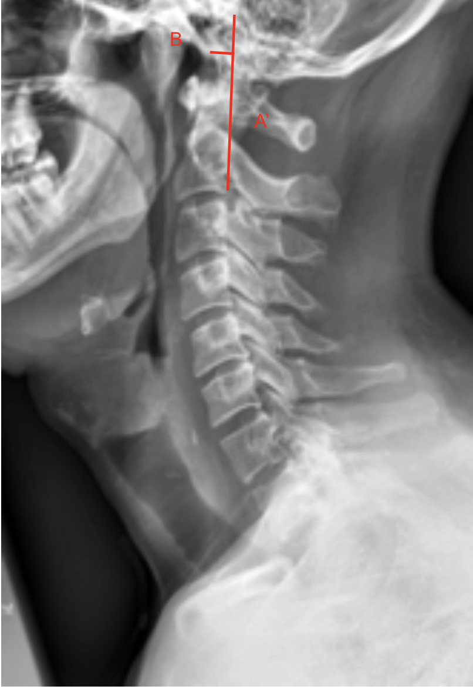
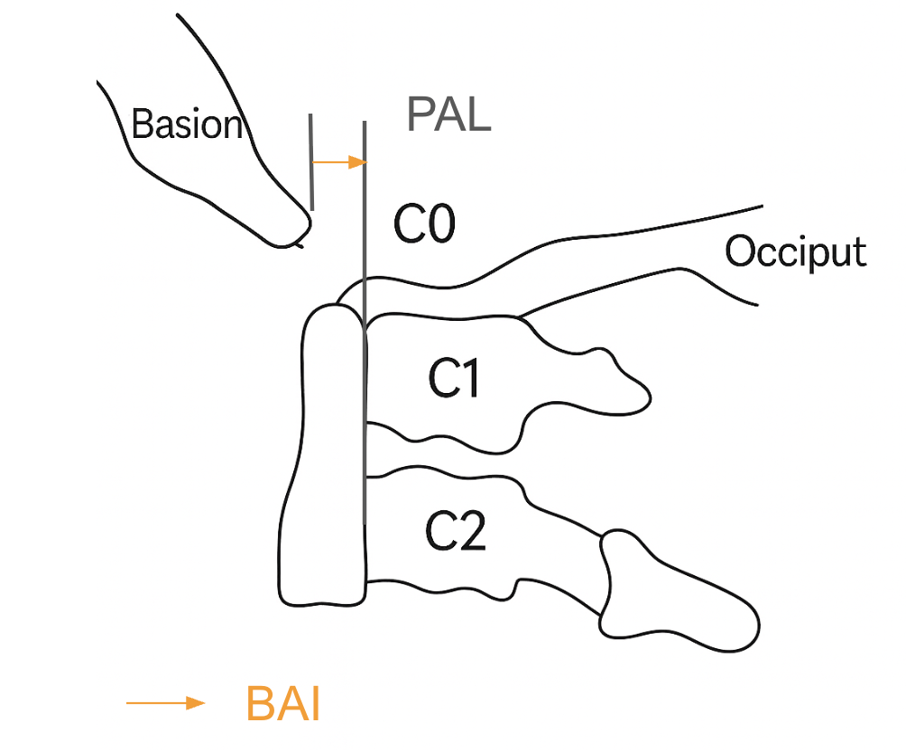
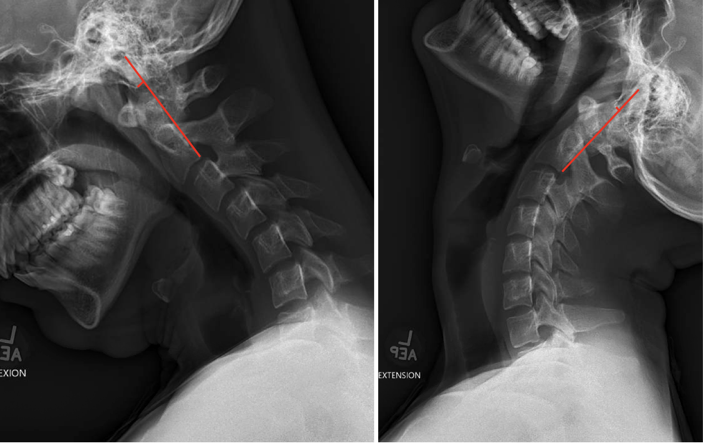

1) Description of Measurement
The Basion-Axial Interval (BAI), also known as the basion-posterior axial line distance, is a key radiographic measurement used to evaluate atlanto-occipital alignment and craniovertebral junction stability.
It measures the horizontal distance between the basion (the anterior margin of the foramen magnum) and a vertical line drawn along the posterior cortex of the dens (odontoid process) or posterior axial line.
This interval is particularly useful in detecting anterior or posterior translation of the occiput relative to the cervical spine, such as in atlanto-occipital dislocation (AOD) following trauma.
2) Instructions to Measure
3) Normal vs. Pathologic Ranges
4) Important References
Harris JH Jr, Carson GC, Wagner LK, Kerr N. Radiologic diagnosis of traumatic occipitovertebral dissociation: 1. Normal occipitovertebral relationships on lateral radiographs of adults. AJR Am J Roentgenol. 1994;162(4):881–886.
Powers B, Miller MD, Kramer RS, Martinez S, Gehweiler JA Jr. Traumatic anterior atlanto-occipital dislocation. Neurosurgery. 1979 Jan;4(1):12-7. doi: 10.1227/00006123-197901000-00004.
Kleweno CP, Zampini JM, White AP, et al. Survival after concurrent traumatic dislocation of the atlanto-occipital and atlanto-axial joints: a case report and review of the literature. Spine (Phila Pa 1976). 2008 Aug 15;33(18):E659-62. doi: 10.1097/BRS.0b013e318182272a.
Smoker WR. Craniovertebral junction: normal anatomy, craniometry, and congenital anomalies. Radiographics. 1994 Mar;14(2):255-77. doi: 10.1148/radiographics.14.2.8190952.
5) Other info....
The BAI is often measured together with the Basion-Dens Interval (BDI) and Power’s Ratio for comprehensive evaluation of craniovertebral stability.
On CT or MRI, the same measurement principles apply, but the posterior axial line is drawn along the posterior dens and body of C2.
In acute trauma, a widened BAI (> 12 mm) indicates tectorial membrane and alar ligament disruption—a hallmark of atlanto-occipital dislocation, which requires immediate stabilization.
The Harris Method (using both BAI and BDI) is a reliable screening tool for occipitocervical dissociation.
Ensure neutral patient head positioning; hyperflexion or hyperextension can artificially alter the measurement.